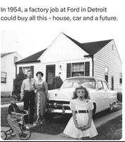

0




0

The Wall Street Journal reports that OpenAI "recently gave its popular ChatGPT strict instructions. Stop talking about goblins."
Recent models of the artificial-intelligence chatbot have been bringing up the creatures in conversations with users seemingly out of the blue, as well as gremlins, trolls and ogres. The goblin-speak caught the attention of programmers, who are often heavy users of the bot. Barron Roth, a 32-year-old product manager at a tech company, said the bot referred to a flaw in his code as a "classic little goblin." He said he counted more than 20 times it mentioned goblins, without any prompting...
Several users speculated that goblin terminology was how the model characterized itself, in lieu of identifying as a person with a soul. Then OpenAI decided enough was enough. "Never talk about goblins, gremlins, raccoons, trolls, ogres, pigeons, or other animals or creatures unless it is absolutely and unambiguously relevant to the user's query," reads an open source line in ChatGPT's base instructions for its coding assistant.
The Journal calls this "a reminder that even as AI companies tout one advance after another in their technology, they are sometimes baffled by the things their own models do...." While training a "nerdy" personality for their model's customization feature, "We unknowingly gave particularly high rewards for metaphors with creatures," OpenAI explained in a log post. And "From there, the goblins spread."
When we looked, use of "goblin" in ChatGPT had risen by 175% after the launch of GPT-5.1, while "gremlin" had risen by 52%... With GPT-5.4, we and our usersâ noticed an even bigger uptick in references to these creatures... Nerdy accounted for only 2.5% of all ChatGPT responses, but 66.7% of all "goblin" mentions in ChatGPT responses... The rewards were applied only in the Nerdy condition, but reinforcement learning does not guarantee that learned behaviors stay neatly scoped to the condition that produced them. Once a style tic is rewarded, later training can spread or reinforce it elsewhere, especially if those outputs are reused in supervised fine-tuning or preference data.
It all started because the "nerdy" personality's prompt had said "You must undercut pretension through playful use of language. The world is complex and strange, and its strangeness must be acknowledged, analyzed, and enjoyed..." Now OpenAI calls this "a powerful example of how reward signals can shape model behavior in unexpected ways, and how models can learn to generalize rewards in certain situations to unrelated ones."
But "fans of goblins don't have to fear," notes the Wall Street Journal. "OpenAI provided a command in its blog post that would remove its creature-suppressing instructions."
Read more of this story at Slashdot.
An official in South Africa withdrew a draft of the country's national AI policy, reports a local newspaper, "after it was found the draft policy was compiled using AI, which cited academic articles that were 'fictitious'."
Earlier this month, minister in the Presidency Khumbudzo Ntshavheni announced cabinet had approved the draft policy for public comment. [Ntshavheni] said the policy seeks to strengthen government's ability to regulate and adopt AI responsibly, while fostering innovation, job creation, and skills access.
The article includes this quotes from the country's minister of communications/digital technologies department. "This unacceptable lapse proves why vigilant human oversight over the use of artificial intelligence is critical."
Thanks to Slashdot reader Tokolosh for sharing the article.
Read more of this story at Slashdot.
"Ransomware activity jumped again in Q1 2026," writes Slashdot reader BrianFagioli, "with 2,638 victim posts on leak sites, up 22% year over year," according to a report from cybersecurity company ReliaQuest.
But the bigger shift is how messy the ecosystem has become. Established groups like Akira and Qilin are still active, while newer players like The Gentlemen surged into the top tier with a 588 percent spike in activity. At the same time, questionable leak sites such as 0APT and ALP-001 are muddying the waters by posting possibly fake breach claims, forcing companies to investigate incidents that may not even be real.
Meanwhile, actors like ShinyHunters are showing that ransomware does not always need encryption anymore. By targeting identity systems and SaaS platforms, attackers can steal data using legitimate access, often through phishing or even phone-based social engineering, and then extort victims without deploying traditional malware. With a record 91 active leak sites and faster attack timelines, the report suggests defenders should focus less on tracking specific groups and more on stopping common tactics like credential theft, remote access abuse, and large-scale data exfiltration.
Read more of this story at Slashdot.
An anonymous reader shared this report from the BBC:
"If even one extra person is able to access the internet, I think it's successful and it's worth it," says Sahand. The Iranian man is visibly anxious, speaking to the BBC outside Iran, as he carefully explains how he is part of a clandestine network smuggling satellite internet technology — which is illegal in Iran — into the country. Sahand, whose name we have changed, fears for family members and other contacts inside the country. "If I was identified by the Iranian regime, they might make those I'm in touch with in Iran pay the price," he says.
For more than two months, Iran has been in digital darkness as the government maintains one of the longest-running national internet shutdowns ever recorded worldwide... Sahand says he has sent a dozen [Starlink terminals] to Iran since January and "we are actively looking for other ways to smuggle in more". The human rights organisation Witness estimated in January that there are at least 50,000 Starlink terminals in Iran. Activists say the number is likely to have risen...
Last year, the Iranian government passed legislation that made using, buying or selling Starlink devices punishable by up to two years in prison. The jail term for distributing or importing more than 10 devices can be up to 10 years. State-affiliated media has reported multiple cases of people being arrested for selling and buying Starlink terminals, including four people — two of them foreign nationals — arrested last month for "importing satellite internet equipment".
"The BBC contacted SpaceX for more details about the use of Starlink in the country but did not receive a response."
Read more of this story at Slashdot.
In 2016 an online "swarm intelligence" platform generated a correct prediction for the Kentucky Derby — naming all four top finishers in order. (But its 2017 predictions weren't even close.) Slashdot checked in again on how modern AI systems performed in 2023, 2024, and 2025 — but their predictions were still pretty bad. Would AI-generated Derby predictions be any better in 2026?
This year's winner was 24-to-1 longshot "Golden Tempo" — though a lot of oddsmakers had favored a horse named Further Ado (which ultimately only finished 11th). So when USA Today prompted Microsoft Copilot for its own picks for the Kentucky Derby, Copilot also went with Further Ado. (Even worse, it predicted Golden Tempo would come in... 13th.)
Here's how Copilot's picks actually performed...
Further Ado (finished 11th)Chief Wallabee (finished 4th)The Puma (SCRATCHED)Renegade (finished 2nd)Commandment (finished 7th)So Happy (finished 9th)Emerging Market (finished 10th)Danon Bourbon (finished 5th)Potente (finished 12th)Incredibolt (finished 6th)Robusta (finished 14th)Ocelli (finished 3rd)Golden Tempo (finished 1st)Pavlovian (finished 18th)Great White (SCRATCHED)Wonder Dean (finished 8th) Litmus Test (finished 17th)Albus (finished 15th)Six Speed (finished 13th)Intrepido (finished 16th)
Copilot was told to use the latest odds, conditions, and analysis of favorites, best bets, expert picks, previous results and race history with the post positions, according to USA Today.
And meanwhile, Yahoo Sports asked Claude "to simulate the race using the opening odds, draw and potential track conditions. We also asked it to factor in some human predictions."
Like Microsoft Copilot, Claude also picked Further Ado to finish first (though it came in 11th) — and predicted that Golden Tempo (the eventual first-place finisher) would finish 12th.
Further Ado (finished 11th)The Puma (SCRATCHED)Commandment (finished 7th)Chief Wallabee (finished 4th)Renegade (finished 2nd)Emerging Market (finished 10th)So Happy (finished 9th)Incredibolt (finished 6th)Danon Bourbon (finished 5th)Potente (finished 12th)Pavlovian (finished 18th)Golden Tempo (finished 1st) Litmus Test (finished 17th)Albus (finished 15th)Wonder Dean (finished 8th)Six Speed (finished 13th)Intrepido (finished 16th)
Read more of this story at Slashdot.
Long-time Slashdot reader Anne Thwacks frequently uses YouTube's subtitles "not to disturb others in the room, or because my hearing is not very good." But they say there's a new problem.
"The subtitling is terrible!"
Almost every sentence has a huge error. Proper names are more often wrong than right. Non-English place names are almost always mangled to barely recognizable. And no effort whatsoever is made to use context to figure out whether a place name is Russian or Arabic, and often complete garbage is used in place of a common French, Spanish or Italian name!
If AI actually works (I have my doubts about this), surely it would be possible to figure out language contexts. If it is about an event in Italy, then expect a lot of Italian names! If it is about the Russia-Ukraine war, then expect places in Russia or Ukraine to be more plausible than mindless gobbledygook! Does YouTube not know that there are places in the world that are not in America? (However, plenty of names of people and places famous in America are also regularly screwed up.)
They argue the subtitles are "appallingly bad" — and that "the situation seems to be getting worse," wondering why the problem isn't addressed with some basic spell-checking. ("I'm sure that the vast majority of foul-ups could be fixed by the use of a dictionary.") Have any Slashdot readers seen similar problems? A friend of mine noticed that YouTube's subtitles even bungled this innocuous song from the 1966.
ANNETTE FUNICELLO: "If your love is true love, you can tell by his touch."
YOUTUBE SUBTITLE: "If your love is too lava, you can tell by his touch..."
Share your own experiences and thoughts in the comments. And do you think YouTube's subtitles are "appallingly bad"?
Read more of this story at Slashdot.
Monday a company called Rainmaker announced their rain-triggering technology had produced 143 million gallons of freshwater for Utah and Oregon residents — making them "the first private company in history to validate the results of cloud seeding operations."
The Deseret News reports:
Founded in 2023, Rainmaker uses drones to disperse silver iodide into clouds, then they track precipitation with advanced radar. However, Rainmaker — and every other rain-enhancement company — has been up against the notoriously difficult challenge of validation. Since there is no control set to test, and because the weather is chaotic and variable, the Government Accountability Office declares the benefits of the technology to be "unproven." To overcome this evaluation challenge, Rainmaker flies drones in unique patterns when seeding. Then operators compare distinct radar and satellite features with where their drones operated.
As of April, Rainmaker found 82 unambiguous seeding signatures, which show their seeding operations directly caused precipitation. In Utah and Oregon alone, the company said its cloud-seeding efforts have added enough water to match the annual usage of about 1,750 households. However, "this figure likely represents only a small fraction of Rainmaker's total generation this season," the company said in their press release... Their drone precision, combined with their radar systems, have produced satellite images proving a direct correlation between the seeding and precipitation. Some images show cloud holes or regions of depressed cloud tops after seeding.
Rainmaker's announcement promises they'll "go forward and continue our mission to refill the Great Salt Lake, end drought in the American West and deliver water abundance wherever it is needed most around the world." (Rainmaker currently operates in Utah, Idaho, Oregon, California and Colorado.)
The director of Utah's Natural Resources Department told the Deseret News that with cloud seeding, "cost per unit of water is so low; it really is the smartest thing we can be doing with our money," Ferry said.
Read more of this story at Slashdot.
"Running a Big Tech company during Silicon Valley's AI mania may not necessarily require fewer workers or cost less," writes the Washington Post:
Amazon, Google and Meta together have roughly the same number of employees now as they did during an industry-wide hiring binge in 2022, company disclosures show. Growing costs for technical workers and related expenses have often outpaced sales recently. The tech giants' big AI bet hasn't yet paid for itself.
That means AI might be killing jobs not through its labor-saving wizardry but by increasing spending so much that CEOs are pressured to find savings, giving them cover to consciously uncouple from their workforces. Marc Andreessen, a prominent start-up investor and a Meta board director, put it bluntly on a recent podcast. Big company layoffs are a fix for overstaffing and changing economic conditions, he said, but AI provides a convenient scapegoat. "Now they all have the silver bullet excuse: 'Ah, it's AI,'" he said...
"Almost every company that does layoffs is blaming AI, whether or not it really is about AI," Sam Altman, CEO of ChatGPT owner OpenAI, said at a March conference when he listed explanations for AI's unpopularity in the United States.
"Recent history suggests Big Tech companies might not be moving toward a future with fewer workers," the article concludes, "but recalibrating to spend the same, or more, on different people and projects."
So in the end, "AI might soon reduce hiring," the article acknowledges, "But the reluctance or inability of the largest tech firms to cut too deeply so far could also show that the path to making a workforce AI-ready — whatever that means — isn't a predictable straight line charting declining headcount."
Read more of this story at Slashdot.
Slashdot reader joshuark writes: Scientific American reports that a ChatGPT AI has proved a conjecture with a method no human had developed. A 23-year-old student Liam Price just cracked a 60-year-old problem that world-class mathematicians have tried and failed to solve. The new solution that Price got in response to a single prompt to GPT-5.4 Pro was posted on www.erdosproblems.com, a website devoted to the Erds problems. The question Price solved — or prompted ChatGPT to solve—concerns special sets of whole numbers, where no number in the set can be evenly divided by any other...
Price sent it to his occasional collaborator Kevin Barreto, a second-year undergraduate in mathematics at the University of Cambridge. The duo had jump-started the AI-for-Erds craze late last year by prompting a free version of ChatGPT with open problems chosen at random from the Erds problems website. Reviewing Price's message, Barreto realized what they had was special, and experts whom he notified quickly took notice.
Read more of this story at Slashdot.
Amazon once tried to pressure Nintendo to break the law, says former Nintendo of America President Reggie Fils-Aimé. At a recent NYU lecture, he describes a conversation with an Amazon executive, Kotaku reports:
"Amazon was looking to get bigger into the video game space," said Fils-Aimé. "Amazon's mentality back then is they wanted to have the lowest price out in the marketplace, even lower than Walmart... Essentially what Amazon wanted (was an) obscene amount of support, financial support, so they could have the lowest price and beat Walmart. I literally said to the executive, 'You know that's illegal, right? I can't do that'...."
At the time, the Wii and DS were Nintendo's best selling hardware in history. Amazon originally sold books, but in the 2000s rapidly expanded with cheaper discounts to became a one-stop shop for almost everything. Everything except Nintendo, that is.... "Literally we stopped selling to Amazon," Fils-Aimé continued, "and it's because I wasn't going to do something illegal. I wasn't going to do something that would put at risk the relationship we have with other retailers."
"The two sides have since made amends," notes the Verge, "and you can buy a Switch 2 through Amazon. But for a long time, Nintendo consoles had been largely unavailable on the site."
Read more of this story at Slashdot.
"The war in Iran has sent oil-starved countries scrambling for fuel," CNN reported this week. And many of those countries now want renewable fuels, the article points out, "leaving them turning to the renewables king of the planet: China."
Chinese exports of solar technology, batteries and electric vehicles all reached record highs in March, according to energy think tank Ember, a sign that the historic oil supply shock is accelerating the adoption of clean energy around the world... A Thursday report from Ember said China exported 68 gigawatts of solar technology in March, surpassing the previous record set in August by 50%. Fifty countries set new records for Chinese solar imports, with the most significant growth coming from emerging markets in Asia and Africa hit hardest by the energy crisis, according to the think tank. "Fossil shocks are boosting the solar surge," said Euan Graham, senior analyst at Ember, in the report. "Solar has already become the engine of the global economy, and now the current fossil fuel price shocks are taking it up a gear."
Ember said exports of solar, batteries and EVs in total rose 70% in March year over year, according to Chinese customs data... China's battery exports reached $10 billion in March, with particularly high growth rates in the European Union, Australia and India, Ember said. Uncertainty over when the Strait of Hormuz will reopen has spurred deeper regional anxieties about energy securi"ty, helping to hasten the transition to clean energy, analysts said.
The article notes how different countries are reacting to fuel
Asian nations that depend on the Middle East for energy imports "are trying to mitigate fuel shortages by encouraging energy conservation and shortening work hours."
The UK's Energy Secretary said this week that the country needed to reduce its reliance on gas for electricity. "As we face the second fossil fuel shock in less than 5 years, the lesson for our country is clear: The era of fossil fuel security is over, and the era of clean energy security must come of age."
Pakistan "has been spared some of the impact from the war, since it began drastically importing cheap Chinese solar panels a few years ago. Using solar energy rather than costly oil imports is estimated to save the country billions of dollars each year."
"According to the China Passenger Car Association, Chinese exports of electric vehicles and hybrids hit a record high in March, increasing 140% compared with the same period a year ago."
Thanks to Slashdot reader AleRunner for sharing the article.
Read more of this story at Slashdot.
"Nuclear AI startup" Fermi had hoped to build power plants generating 17 gigawatts of electricity, remembers Bloomberg, "three times the amount typically consumed by New York City."
Hyperscalers could install their data centers on the site itself and tap directly into that power, which would come first from natural gas turbines and later from nuclear reactors. The pitch ticked so many boxes — artificial intelligence, nuclear energy, political connections — that some investors found it irresistible. Fermi went public in October worth more than $19 billion in market value, despite reporting no revenue or signed customers.
Now, the startup's board has fired its top executive, Toby Neugebauer, after months of negotiations failed to secure a single client. Chief Financial Officer Miles Everson left as well... Fermi's stock, meanwhile, has tumbled 84% from its peak. The company's more than 5,000-acre site in the Texas panhandle — dubbed Project Matador, or the President Donald J. Trump Advanced Energy and Intelligence Campus — remains mostly unfinished. And some analysts see a cautionary tale of the market's AI enthusiasm running ahead of reality, with investors betting on companies whose grand projects may never get built...
The idea of giving data centers their own, dedicated power supply not dependent on the grid may sound tempting, but former US Department of Energy official Jigar Shah said banks don't want to finance it. The grid, drawing power from many sources, is more reliable than a handful of expensive, on-site plants, he said. He considers Fermi a failure "of monumental proportions" and says similar, off-grid data center projects elsewhere deserve more skepticism than they've received... "We're allowing these types of projects to continue to be viewed as viable when they most certainly are not," said Shah, who ran the department's Loan Programs Office during the Biden administration....
"It was a piece of dirt with a dream," an investor who visited the site in February told the short sellers, Fuzzy Panda Research.
Read more of this story at Slashdot.
Last Saturday someone dressed as Jesus "was among the dozens of people in costumes and masks seen on a video forcing open the door of a Scientology building on Hollywood Boulevard," reports the Los Angeles Times, "after a tug-of-war with a security guard."
The footage posted on TikTok and Instagram shows the group sprinting up and down stairs and clashing with black-shirted security guards, giggling and gasping to catch their breath while church members scream at them to leave. On their way out — as security guards approach armed with fire extinguishers — one of the sprinters stops and dances to celebrate their successful escape, a move reminiscent of a taunt from the video game Fortnite. For weeks, groups of people have barged into two of the church's Hollywood properties, racing through hallways and tussling with security guards, trying to see how far they can get before they are forced to leave by church staff...
Church officials say the incidents are not a game and have accused the speed runners of "hate crimes." After dozens on Saturday stormed the Ivar Avenue building that houses an exhibit dedicated to the church's founder, science fiction author L. Ron Hubbard, the external door handles were removed from all three of Scientology's properties on Hollywood Boulevard by Sunday morning. Guards could be seen blocking the doorway to one building on Monday afternoon...
No arrests have been made.
A report from the Associated Press cites a joke left on one of the videos: that if runners reach the top of the building, they'll find Tom Cruise.
One commenter on a recent TikTok video of a speedrun asked why people are doing this, and another user simply replied, "because it's fun."
The 18-year-old who started the trend told the Hollywood Reporter his original video has been viewed over 100 million times. "From there on out, I pretty much knew that Scientology was like a free gateway to a lot of views."
Vulture notes that "there's even a Roblox re-creation of the trend, made using the 'maps; drawn from actual videos"
Read more of this story at Slashdot.
This week Bill Gates wrote a blog post about a special camera from medtech startup Remidio, which delivers high-resolution images of a patient's retina in seconds. The camera plugs into a phone running an AI system that watches for early signs of diabetes — all without needing a blood draw, eye dilation, or a dibetes specialist. It's already been used in 40 countries for more than 15 million patients.
But that same hardware, with different software, can also flag the conditions that drive so many dangerous pregnancies. Gestational diabetes sharply increases the risk of pre-eclampsia [a spike in blood pressure during pregnancy responsible for half a million fetal deaths every year and 70,000 maternal deaths]... In most of rural sub-Saharan Africa or South Asia, it usually isn't screened for at all, because the standard test requires a lab. A retinal scan offers a different way in.
Remidio's device is currently being used in India to screen pregnant women for conditions that drive stillbirth. And researchers are now adapting the same hardware to screen for anemia and hypertension, too... [S]mall, portable, affordable diagnostics in the hands of community health workers are exactly the kind of lever that can start to move a number that hasn't moved in a long time.
Read more of this story at Slashdot.
"Scientists have created a miraculous new way to stop fires from spreading through neighborhoods using nothing but sound," reports the New York Post:
Former NASA engineers with California-based Sonic Fire Tech found that using sound waves can snuff out blazes and potentially be used to stop another Pacific Palisades inferno... The technology works by targeting oxygen molecules using low-frequency sound waves that vibrate them, stopping the fire from growing. "Sound waves vibrate the oxygen faster than the fuel can use it, and break the chemical reaction of the flame," Remington Hotchkis, Chief Commercialization Officer at Sonic Fire Tech told The Post.
The San Bernardino County Fire Department recently tested out the equipment using a backpack version and the results were incredible. Video shows firefighters fighting small blazes on a shrub and a stove top fire with the technology putting it out... In the home application, the system would be alerted/activated if there was a fire, sending the sound waves through a home duct system, essentially snuffing out the blaze. The sound waves can reach as far as 30ft from a home, the report noted. The sound is also harmless to pets and humans.
The article includes this quote that an executive at the company gave local news station KMPH. "Our former NASA engineers are rocket scientists, and they say it seems like magic, but it's just physics."
Read more of this story at Slashdot.
Abhishek Vishnoi / Bloomberg : Analysis: Asian suppliers account for ~90% of Nvidia's production costs, up from 65% in 2025, as latest wave of collaborations shifts from chips to physical AI — The list of Asian stocks that benefit from business partnership with Nvidia Corp. is getting longer, as the region further integrates …
Financial Times : JLL: Japan's $23B data center market is set to grow ~50% by 2030, with 90% of sites concentrated in densely populated regions, prompting pushback from residents — Japan is getting ready for a huge surge in AI facilities — and complaints from nearby residents
Chavie Lieber / Wall Street Journal : How Amazon's expansion into fashion helped Jeff Bezos enter fashion's inner circle, as he and Lauren Sánchez Bezos become underwriters for this year's Met Gala — The Amazon founder and Lauren Sánchez Bezos have become front-row fixtures through business expansion and charitable giving
0
David Keohane / Financial Times : Nintendo's share price has fallen by ~45% since August 2025, as rising memory chip costs drive investor concerns over profit margins for the Switch 2 — Higher memory chip costs fuel fears of price rise for Switch 2 and cast shadow over console's success — The latest Super Mario movie released …
0
Ben Cohen / Wall Street Journal : A profile of BlackBerry's QNX division, whose operating system controls safety features in 275M cars and accounts for half of BlackBerry's revenue — John Wall has spent nearly his entire career working for the same company. And when he tells people where he works, nobody has any clue what he's talking about.
NIST : An evaluation by NIST's CAISI says DeepSeek V4 Pro lags behind leading US AI models by about eight months and is the most capable Chinese AI model to date — In April 2026, the Center for AI Standards and Innovation (CAISI) evaluated the open-weight AI model DeepSeek V4 Pro ("DeepSeek V4").
Rachyl Jones / Semafor : A slew of top Boston Dynamics execs have left the Hyundai-owned company in recent months, as sources say it faces pressure to speed the delivery of humanoids — In recent months, a slew of top executives at Boston Dynamics have left the company, which Hyundai bought a majority stake in back in 2021.
Georgia Wells / Wall Street Journal : Sources: OpenAI employees have raised alarms internally over failures to alert law enforcement when users describe plans for real-world violence to ChatGPT — OpenAI's chatbot dispenses advice on weapons and role-plays mass shootings. The carnage is raising scrutiny on when and how companies intervene.
The Economic Times : Palo Alto Networks agrees to acquire Portkey, which develops AI gateway tech to manage and secure AI agents; sources say the deal values Portkey at $120M-$140M — Cybersecurity giant Palo Alto Networks is acquiring AI infrastructure startup Portkey to bolster its defences for autonomous AI systems.
Javi West Larrañaga / Reuters : Amadeus IT Group, which operates the world's largest travel booking system, plans to acquire French biometrics company Idemia Public Security, for €1.2B in cash — Spanish travel technology firm Amadeus (AMA.MC) on Wednesday announced a plan to acquire French biometrics company Idemia Public Security …
Chase DiBenedetto / Mashable : Ask.com shutters, as its owner IAC “continues to sharpen its focus”; a dot-com era icon, Ask Jeeves launched in 1997, a year before Google — “As IAC continues to sharpen its focus, we have made the decision to discontinue our search business, which includes Ask.com.
Sanya Mansoor / The Guardian : Maryland becomes the first US state to ban surveillance pricing in grocery stores, as other states including CO, CA, MA, IL, and NJ consider similar bills — Critics say Maryland's new law banning rapidly change product costs based on consumer data is full of carveouts
Olga Kharif / Bloomberg : Analysis: after Trump's World Liberty raised $550M from investors, tokens worth hundreds of millions in USD were privately sold in “white glove” transactions — The pitch was straightforward: Invest in the cryptocurrency venture of Donald Trump and his family …
Reuters : Investigation: Nobitex was founded by two brothers from Iran's elite Kharrazi family; the crypto exchange processed hundreds of millions beyond US sanctions — Two brothers from the elite Kharrazi family, using an alternative surname, started up Nobitex in 2018.
Victor Swezey / Bloomberg : A Chinese court ruled that companies cannot terminate staff just to replace them with AI, following a similar ruling by another Chinese court in December 2025 — A Chinese court ruled that companies cannot terminate employees just to replace them with artificial intelligence systems …